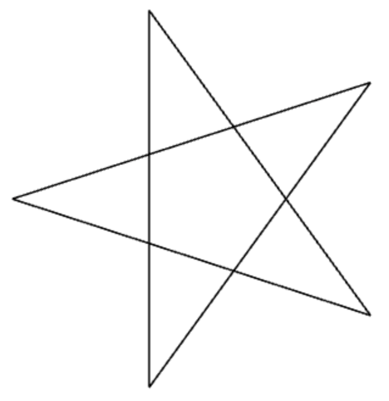
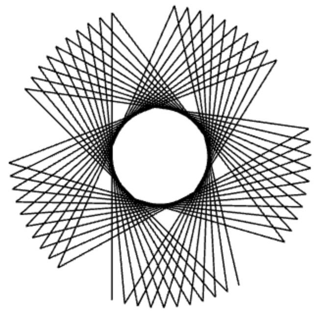
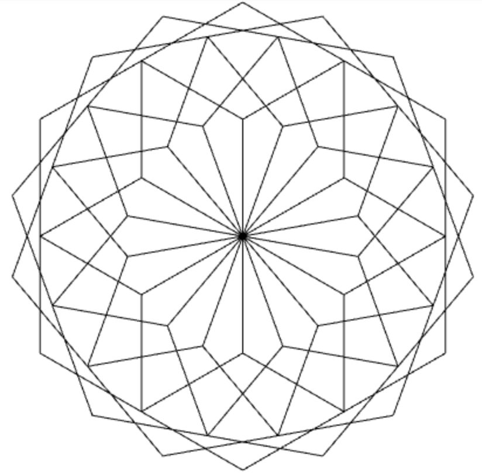
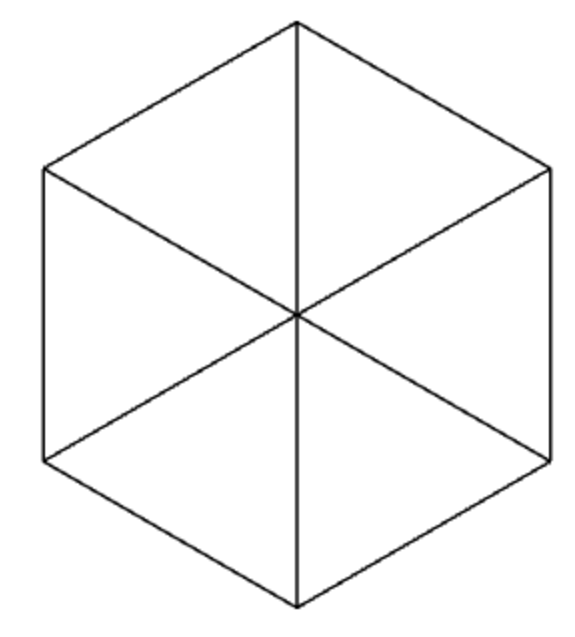
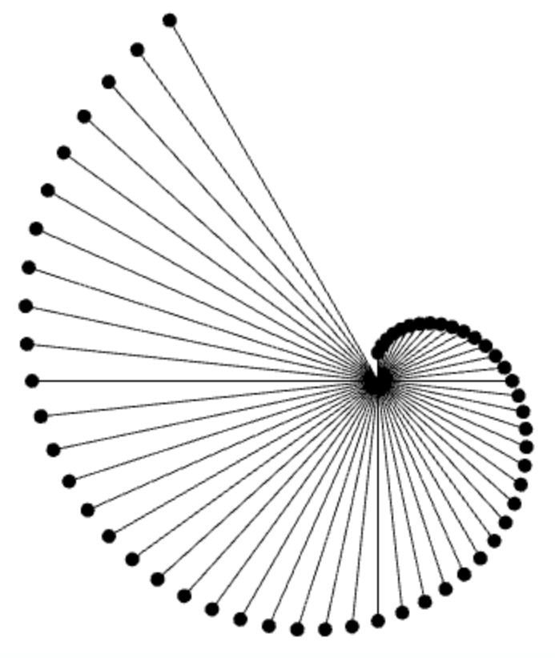
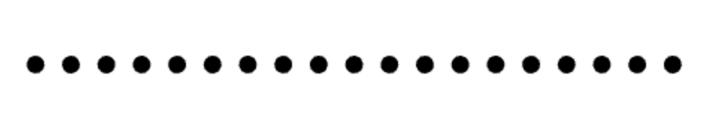
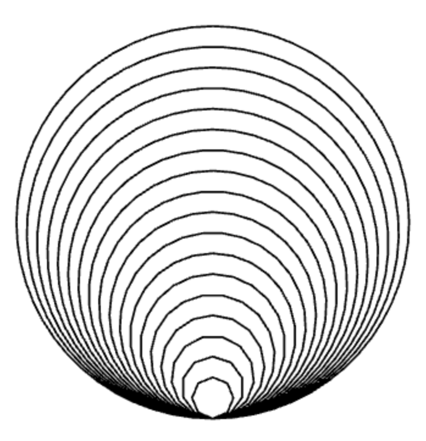

for-Schleifen und verschachtelten for-Schleifen in meiner Zusammenfassung an.
Aufgabe 1
a) Zeichne einen 5-er Stern, indem du in einer for-Schleife die Befehle forward(200) und right(144) fünfmal wiederholst.

b) Zeichne die folgende Figur, indem du in einer for-Schleife die Befehle forward(200) und right(143) mehrmals wiederholst.
Verwende eine for-Schleife innerhalb einer anderen for-Schleife.

Aufgabe 2
Verwende verschachtelte for-Schleifen, um eine Figur zu zeichnen, die aus mehreren Sechsecken besteht und in einem kreisförmigen Muster angeordnet ist.

Aufgabe 3
Zeichne eine Figur aus dreieckigen Mustern, die in einer sechseckigen Anordnung platziert sind. Verwende verschachtelte for-Schleifen.

Aufgabe 4
Die Turtle bewegt sich vorwärts, zeichnet einen Punkt, und kehrt dann zum Ausgangspunkt zurück. Bevor sie die nächste Strecke zeichnet, dreht sie sich um einen kleinen Winkel nach rechts. Zeichne eine solche Figur mit einer for-Schleife mit Startwert 20, Endwert 300, und Wertänderung 5. Wenn du vor Beginn der for-Schleife den Befehl hideTurtle() wählst, erfolgt das Zeichnen schneller.

Aufgabe 5
Zeichne eine Reihe von gefüllten Kreisen mit dem Befehl dot(10). Positioniere die Kreise entlang einer Linie, indem du die for-Schleife und den Befehl setPos(x, y) verwendest, um die x-Koordinate in gleichmäßigen Abständen zu ändern.

Aufgabe 6
Zeichne eine Spirale aus Kreisbögen, deren Durchmesser sich mit jedem Schritt vergrößert. Verwende dafür eine for-Schleife und den Befehl leftArc(d, 360), um die Kreisbögen zu zeichnen.
